Installations Page
Designed and shipped installation analytics that gave developers site-level visibility into how their apps were used
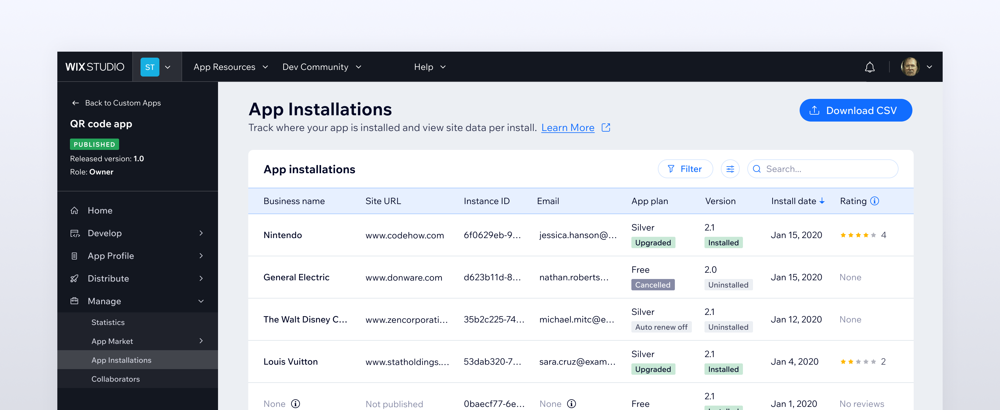
I designed a page that developers needed: they had no way to see who installed their apps, so they emailed support for basic usage data.
I mapped the gap with the PM, worked through permission levels and PII limits with engineering, and shipped part of it in code.
Developers who found it used it, and the feedback has been positive.
The problem
Developers had no visibility into who was installing their apps. It came up in almost every developer interview. They were building workarounds and emailing our support team just to get basic usage data. They needed it for user support, for marketing (emails and upsells), and for trends such as which geo their users come from.
Process
Research
The PM and I started by mapping the gap, and user interviews confirmed it was a top pain point. I also looked at how Shopify and Apple's App Store Connect handle the same problem for their ecosystems.
Design principles
Four principles came out of the research and the constraints.
- Explain, don't hide. When data is restricted or missing, a tooltip says why and how to get access.
- Start from what developers asked for. The default view comes from the interviews and requests.
- Legal sets the boundaries. PII and legal rules decided what could be shown, and to whom, before any layout.
- Let developers shape the view. Filters, column customization, and export.
Designing the page
- Started with a quick mock in Figma Make to validate the direction with stakeholders and users
- Designed the page layout, filters, data export, and column customization in Figma
- Defined the default view with the user interviews and requests in mind
- Handled missing data with contextual tooltips explaining why some data is missing (for example, the user didn’t fill out their business name)
- Led UX writing for the project, working closely with technical writers and drafting the documentation
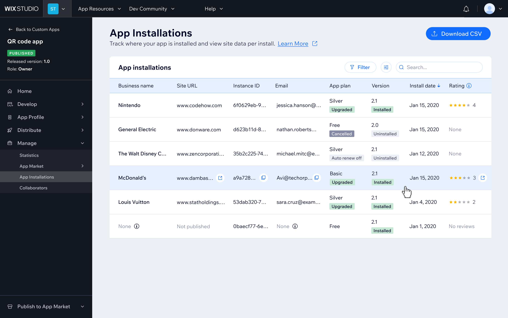
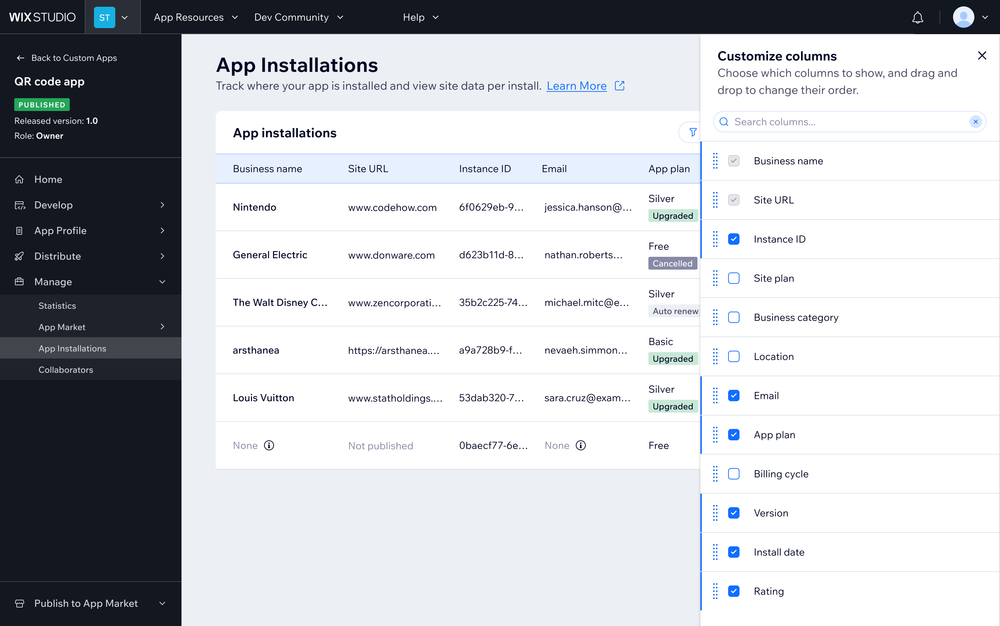
Delivery
- Joined the implementation team using Cursor and Claude Code to add features and fix bugs
- Contributed a year selector to the WixWix is a website builder and development platform used by millions of businesses and creators worldwide. Design System in code, making it available across the platform
- Caught major server-side bugs where the data coming back was incorrect
- Launched with a small controlled rollout given the migration complexity. It's live now
Impact
Since opening to all developers, the majority of those who visited the Wix Developer Center and had published apps discovered the page. Of those who saw it, the majority took action, copying data, opening sites, and applying filters. This was after a quiet launch with no promotion.
Screens
The page


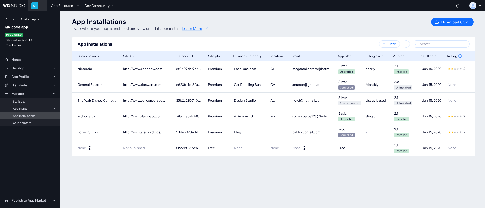
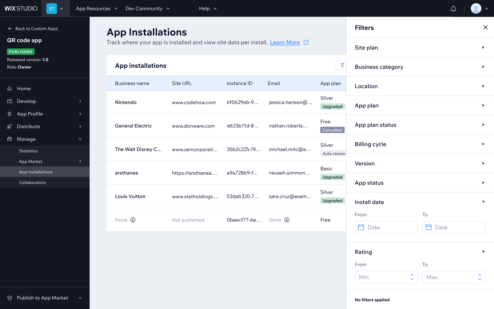
Behind the scenes
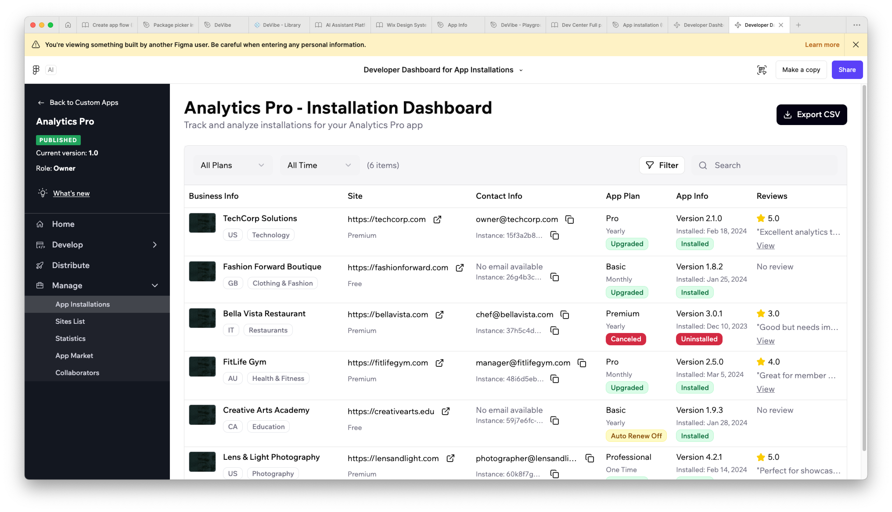
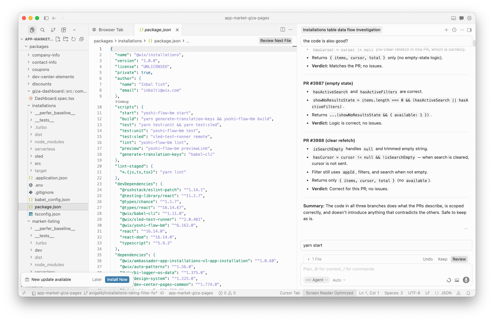
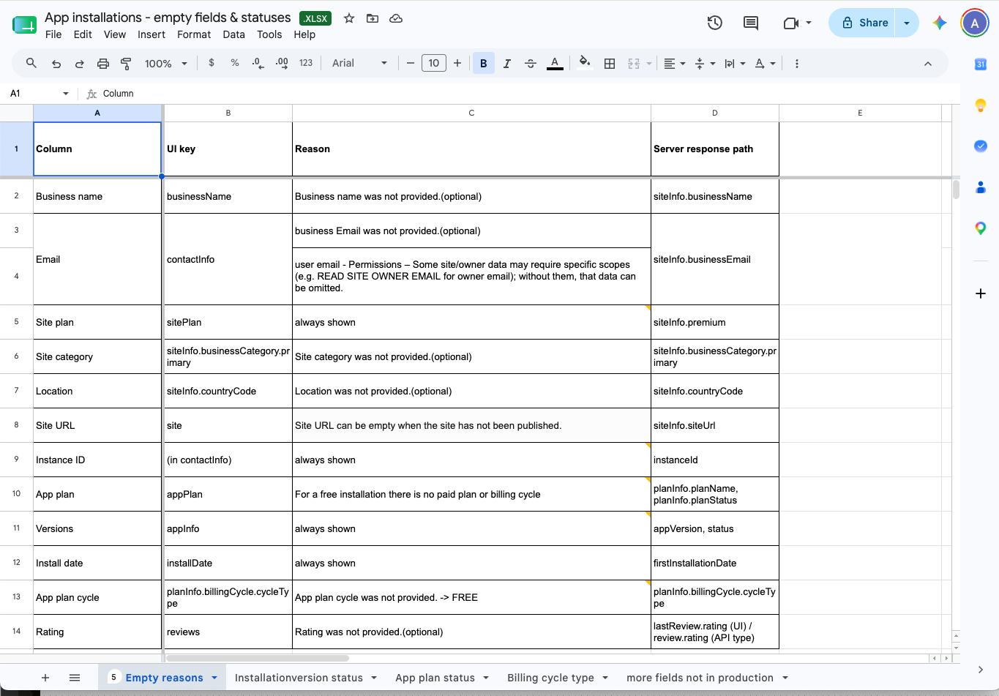
Edge & empty states
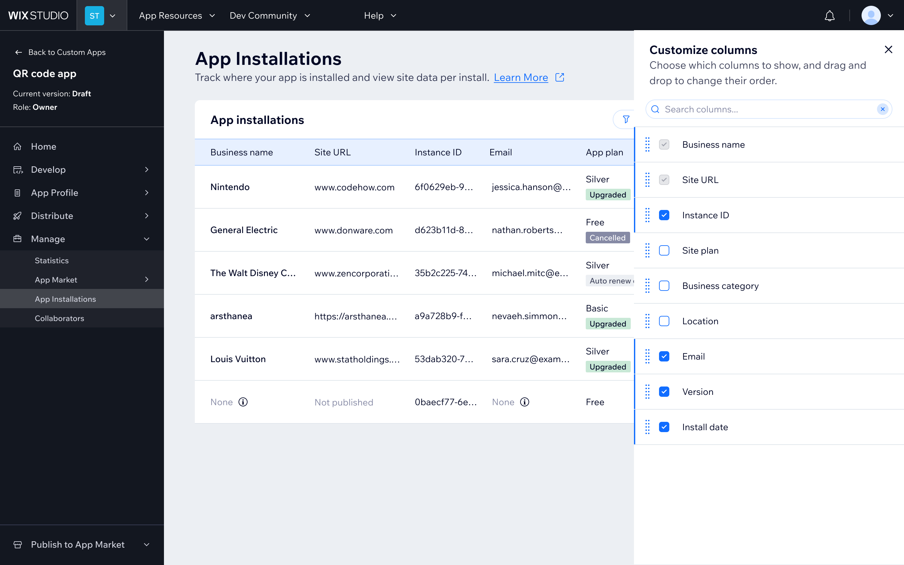
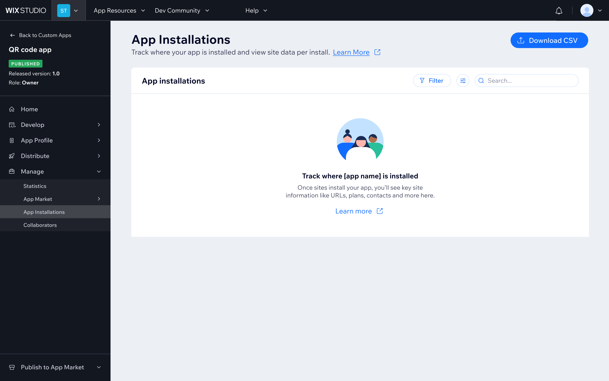

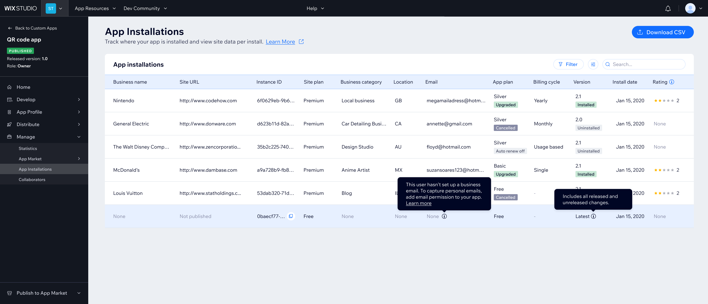
Bottom line
API constraints, PII limits, and backend alignment were harder to navigate than the design itself. What stayed with me: almost everyone who found the feature used it. But most didn't find it. Getting a feature in front of the right developer at the right moment is its own design problem.
Last updated 13 October 2026